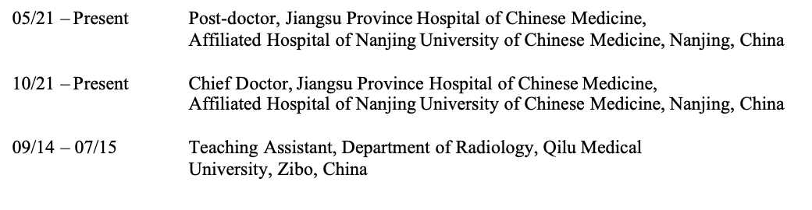

Shuai Ren

No. 155 Hanzhong Road
Department of Radiology, Affiliated Hospital of Nanjing University of Chinese Medicine,
Nanjing, Jiangsu 210029, China
shuairen@njucm.edu.cn; sren001@163.com
Shuai Ren

No. 155 Hanzhong Road
Department of Radiology, Affiliated Hospital of Nanjing University of Chinese Medicine,
Nanjing, Jiangsu 210029, China
shuairen@njucm.edu.cn; sren001@163.com
Visiting Scholar, Department of Radiology,
School of Medicine, University of Maryland, MD, USA
Ph.D., The First Clinical Medical School,
Nanjing University of Chinese Medicine, Nanjing, China.
Dissertation: Diagnostic Potential of Serum Exosomal MicroRNAs and Radiomics in the Identification of Patients with Early-stage Pancreatic Cancer
Shandong First Medical University & Shandong Academy of Medical Sciences, Tai'an, China.
Thesis: The Application of Superparamagnetic Iron Oxide Bi-modal Nanoprobe in the Diagnosis and Treatment of Pancreatic Cancer
B.S., Dept of Medical Imaging,
Shandong First Medical University & Shandong Academy of Medical Sciences, Tai'an, China.
WORKING EXPERIENCE


9/15 – 7 /18
9/09 – 7/14
PI, 82202135, National Natural Science Foundation of China, 01/2023-12/2025
Accurate diagnosis and treatment of pancreatic cancer via modulating extracellular matrix by EGFR/αvβ3 dual-targeting drug delivery nano-probes
PI, 2023M741808, China Postdoctoral Science Foundation, 01/2024-12/2026
Visualization Study on Targeted Penetration and Combined Immunotherapy of Flexible Nanovaccine for Pancreatic Cancer
PI, 201909077001, China Scholarship Council, 01/2020-02/2021
Early diagnosis and treatment of pancreatic cancer
PI, JSTJ-2023-WJ027, Young Elite Scientists Sponsorship Program by Jiangsu Association for Science and Technology, 01/2024-12/2026
An Integrated Study on the targeted diagnosis and treatment in pancreatic cancer using nano-probes loaded herb monomer
PI, 2023P007, Nanjing Municipal Human Resources And Social Security Bureau, 01/2024-12/2026
An Integrated Study on the targeted diagnosis and treatment in pancreatic cancer using nano-probes loaded herb monomer
PI, TC2023B003, The Open Project of Jiangsu Provincial Science and Technology Resources (Clinical Resources) Coordination Service Platform, 01/2024-12/2026
A Study on Multi-scale prediction of pancreatic cancer tumor and microenvironment heterogeneity based on imaging-pathological AI
PI, XZR2023036, the Natural Science Foundation of Nanjing University of Chinese Medicine, 01/2024-12/2026
Tumor Microenvironment Targeted Diagnosis and Treatment of Pancreatic Cancer with Dual-modal Magnetic Iron Oxide Drug-loaded Nano-probes
PI, 2023QB0112, Foundation of Excellent Young Doctor of Jiangsu Province Hospital of Chinese Medicine, 01/2023-12/2025, Design, Synthesis, Purification, and Characterization of Molecular probes
PI, Y2021CX19, Innovative Development Foundation of Department in Jiangsu Province Hospital of Chinese Medicine, 07/2021-12/2023
Research Applications of Deep Learning-based Artificial Intelligence in the Diagnosis and Differential Diagnosis of Early-stage Pancreatic Cancer
PI, KYCX20_1477, Postgraduate Research & Practice Innovation Program of Jiangsu Province, 06/2020-06/2021
Diagnosis and Treatment of Pancreatic Cancer via Modulating Tumor Extracellular Matrix FAP using Emodin-loaded Targeted Probe
Co-Investigator, 82371919, National Natural Science Foundation of China, 01/2024-12/2027
The Visualization Study of Pancreatic Cancer Microenvironment Heterogeneity Based on “Organ-Cell-Molecules” Level
Co-Investigator, 82372017, National Natural Science Foundation of China, 01/2024-12/2027
Study on Targeted Penetration and Combined Immunotherapy of Hybrid Membrane Coated Drugs-loaded Flexible Dopamine Nanobowl for Pancreatic Cancer
Co-Investigator, 82171925, National Natural Science Foundation of China, 01/2022-12/2025
Therapeutic Research on Pancreatic Cancer Using MRI/NIRF Probe Loaded with Peptide and siRNA
Co-Investigator, 81771899, National Natural Science Foundation of China, 01/2018-12/2021
The Research on Integration of Early Diagnosis and Treatment of Pancreatic Cancer by GPC1 Targeted ORI Loading Multi-modal Nanoprobe
Co-Investigator, 81773460, National Natural Science Foundation of China, 01/2018-12/2021
The Role of LGR4, A Novel Decoy Receptor of RANKL, and Its Age-related Change in Cadmium-reduced Osteoporosis and the Potential Mechanisms
Co-Investigator, ZD201907, Administration of Traditional Chinese Medicine of Jiangsu Province, 01/2020-12/2021
An Integrated Study on Accurate Diagnosis and Treatment of Pancreatic Cancer by Chinese Medicine-loaded Nano-probe with Targeted Molecular Imaging and Radiomics
Co-Investigator, BE2017772, Jiangsu science and technology planning project, 07/2017-06/2020
A Multi-center Research of Early and Precise Diagnosis of Pancreatic Cancer
1) Ren S, Daniels MJ, Wang Z*. Can Relative Enhancement Ratio of Portal Venous Phase to Unenhanced CT Be Used to Differentiate Lipid-poor Adrenal Adenomas from Adrenal Hyperplasia. Radiology. 2022, 303(3):E37.
2) Ren S*, Song LN, Tian Y, Zhu L, Guo K, Zhang HF, Wang ZQ*. Emodin-Conjugated PEGylation of Fe3O4 Nanoparticles for FI/MRI Dual-Modal Imaging and Therapy in Pancreatic Cancer. Int J Nanomedicine. 2021, 16:7463-7478.
3) Ren S, Qian LC, Cao YY, Daniels MJ, Song LN, Tian Y, Wang ZQ*. Computed tomography-based radiomics diagnostic approach for differential diagnosis between early- and late-stage pancreatic ductal adenocarcinoma. World J Gastrointest Oncol. 2024, 16(4): 1256-1267.
4) Ren S, Guo K, Li Y, Cao YY, Wang ZQ*, Tian Y. Diagnostic accuracy of apparent diffusion coefficient to differentiate intrapancreatic accessory spleen from pancreatic neuroendocrine tumors. World J Gastrointest Oncol. 2023, 15(6): 1051-1061.
5) Guo K#, Ren S#, Zhang H, Cao Y, Zhao Y, Wang Y, Qiu W, Tian Y, Song L, Wang Z*. Biomimetic Gold Nanorods Modified with Erythrocyte Membranes for Imaging-Guided Photothermal/Gene Synergistic Therapy. ACS Appl Mater Interfaces. 2023, 15(21):25285-25299.
6) Guo K#, Chen D#, Ren S#, Younis MR, Teng Z, Zhang L, Wang Z, Tian Y. Reversing Immune Suppression and Potentiating Photothermal Immunotherapy via Bispecific Immune Checkpoint Inhibitor Loaded Hollow Polydopamine Nanospheres. ACS Appl Mater Interfaces. 2023, 15(11):13879-13891.
7) Ren S, Zhao R, Cui WJ, Qiu WL, Guo K, Cao YY, Duan SF, Wang ZQ*, Chen R. Computed Tomography-Based Radiomics Signature for the Preoperative Differentiation of Pancreatic Adenosquamous Carcinoma from Pancreatic Ductal Adenocarcinoma. Front. Oncol. 2020, 10:1618.
8) Ren S, Zhang JJ, Chen JY, Cui WJ, Zhao R, Qiu WL, Duan SF, Chen R, Chen X, Wang ZQ*. Evaluation of Texture Analysis for the Differential Diagnosis of Mass-Forming Pancreatitis from Pancreatic Ductal Adenocarcinoma on Contrast-Enhanced CT Images. Front. Oncol. 2019, 9:1171.
9) Ren S#, Qian LC#, Daniels MJ, Duan SF, Chen R, Wang ZQ*. Evaluation of Contrast-Enhanced Computed Tomography for the Differential Diagnosis of Hypovascular Pancreatic Neuroendocrine Tumors from Chronic Mass-Forming Pancreatitis. Eur J Radiol. 2020, 133:109360.
10) Ren S*, Qian LC, Lv XJ, Cao YY, Daniels MJ, Wang ZQ, Song LN, Tian Y. Comparison between solid pseudopapillary neoplasms of the pancreas and pancreatic ductal adenocarcinoma with cystic changes using computed tomography. World J Radiol. 2024, 16(6):211-220.
11) Ren S*, Chen R, Wang Z. Editorial: Novel circulating biomarkers and radiomics in pancreatic cancer. Front Oncol. 2023, 13:1259070.
12) Guo K, Cao YY, Qian LC, Daniels MJ, Tian Y, Li Y, Song L, Wang Z, Ren S*. Dihydroartemisinin induces ferroptosis in pancreatic cancer cells by the regulation of survival prediction-related genes. Tradit Med Res. 2023, 8(12):67.
13) Dong C, Wang Y, Gu X, Lv X, Ren S*, Wang Z, Dai Z. Differential diagnostic value of tumor markers and contrast-enhanced computed tomography in gastric hepatoid adenocarcinoma and gastric adenocarcinoma. Front Oncol. 2023, 13:1222853.
14) Ren S#*, Tang HJ#, Zhao R, Duan SF, Chen R, Wang ZQ*. Application of Unenhanced Computed Tomography Texture Analysis to Differentiate Pancreatic Adenosquamous Carcinoma from Pancreatic Ductal Adenocarcinoma. Curr Med Sci. 2022, 42(1):217-225.
15) Ren S, Song L, Daniels MJ, Tian Y, Wang Z. ChatGPT in Radiology: Insights into Current Advantages and Limitations of Artificial Intelligence in Radiology Reporting. Explor Res Hypothesis Med. DOI: 10.14218/ERHM.2024.00016.
16) Ren S, Song L, Daniels MJ, Tian Y, Wang Z. Radiomics in Pancreatic Cancer: Present and Future. Cancer Screen Prev. 2024, 3(2):130-132.
17) Ren S*, Wang J, Wang Z. An Intelligent Diagnosis Method of MRI in Classifying Prostate Cancerous Tissue Using SVM Algorithm with Different Kernels. Explor Res Hypothesis Med. 2023, 8(1):1-2.
18) Guo K, Zhao Y, Cao Y, Li Y, Yang M, Tian Y, Dai J, Song L, Ren S*, Wang Z*. Exploring the key genetic association between chronic pancreatitis and pancreatic ductal adenocarcinoma through integrated bioinformatics. Front Genet. 2023, 14:1115660.
19) Qian L, Xu Z, Chen Y, Gao Z, Luo T, Wu L, Zheng Y, Chen L, Yuan D, Ren S*, Zhu Y. Drug pair of Cornus officinalis and Radix achyranthis bidentatae improves renal injury of hypertension by regulating metabolic reprogramming mediated by eNOS. Heliyon. 2024, 10(12):e33369.
20) Cao Y, Guo K, Zhao R, Li Y, Lv X, Lu Z, Tian L, Ren S*, Wang Z*. Untargeted metabolomics characterization of the resectable pancreatic ductal adenocarcinoma. Digit Health. 2023, 9:20552076231179007.
21) Song L#, Ren S#, Yue Y, Tian Y, Wang Z*. A Gold Nanocage Probe Targeting Survivin for the Diagnosis of Pancreatic Cancer. Pharmaceutics. 2023, 15(5):1547.
22) Qian LC#, Ren S#, Xu ZC, Zheng YW, Wu LH, Yang Y, Wang YX, Li J, Yan SH*, Fang ZY*. Qian Yang Yu Yin Granule Improves Renal Injury of Hypertension by Regulating Metabolic Reprogramming Mediated by HIF-1α/PKM2 Positive Feedback Loop. Front Pharmacol. 2021, 12:667433.
23) Zhu L#, Ren S#, Daniels MJ, Qiu WL, Song LN, You T, Wang DQ*, Wang ZQ*. Exogenous HMGB1 promotes the proliferation and metastasis of pancreatic cancer cells. Front Med (Lausanne). 2021, 8:756988.
24) Zhao R, Ren S#, Li C, Guo K, Lu Z, Tian L, He J, Zhang K, Cao Y, Liu S, Li D, Wang Z. Biomarkers for pancreatic cancer based on tissue and serum metabolomics analysis in a multicenter study. Cancer Med. 2023, 12(4): 5158- 5171.
25) Ren S, Chen X, Wang ZL, Zhao R, Wang JH, Cui WJ, Wang ZQ*. Differentiation of hypovascular pancreatic neuroendocrine tumors from pancreatic ductal adenocarcinoma using contrast-enhanced computed tomography. Plos One. 2019, 14(2):e0211566.
26) Ren S, Chen X, Cui WJ, Chen R, Guo K, Zhang HF, Chen S, Wang ZQ*. Differentiation of chronic mass-forming pancreatitis from pancreatic ductal adenocarcinoma using contrast-enhanced computed tomography. Cancer Manag Res. 2019, 11:7857–7866.
27) Guo CG#, Ren S#, Chen X, Wang QD, Xiao WB, Zhang JF, Duan SF, Wang ZQ*. Pancreatic neuroendocrine tumor: prediction of the tumor grade using magnetic resonance imaging findings and texture analysis with 3-T magnetic resonance. Cancer Manag Res. 2019, 11:1933-1944.
28) Ren S#, Chen X#, Wang JH, Zhao R, Song LN, Li H, Wang ZQ*. Differentiation of duodenal gastrointestinal stromal tumors from hypervascular pancreatic neuroendocrine tumors in the pancreatic head using contrast-enhanced computed tomography. Abdom Radiol (NY). 2019, 44(3):867-876.
29) Ren S#, Zhao R#, Zhang JJ, Guo K, Gu XY, Duan SF, Wang ZQ*, Chen R. Diagnostic accuracy of unenhanced CT texture analysis to differentiate mass-forming pancreatitis from pancreatic ductal adenocarcinoma. Abdom Radiol (NY). 2020, 45(5):1524–1533.
30) Wang J#, Ren S#, Liu YK, Guo K, Chen X, Wang ZQ*, Chen R. Carcinoid Tumorlets Co-Existing with Chronic Pulmonary Inflammatory Processes: Imaging Findings and Histological Appearances. Med Sci Monit. 2020, 26:e926014.
31) Ren S, Wang ZQ*. Letter regarding “Nonhypervascular pancreatic neuroendocrine tumors: Spectrum of MDCT imaging findings and differentiation from pancreatic ductal adenocarcinoma. Eur J Radiol. 2020, 132:109282.
32) Ren S, Wang ZQ*. Letter regarding "Complementary role of computed tomography texture analysis for differentiation of pancreatic ductal adenocarcinoma from pancreatic neuroendocrine tumors in the portal-venous enhancement phase". Abdom Radiol (NY). 2021, 46(4):1648-1649.
33) Chen S#, Ren S#, Guo K, Daniels MJ, Wang ZQ*, Chen R. Preoperative differentiation of serous cystic neoplasms from mucin-producing pancreatic cystic neoplasms using a CT-based radiomics nomogram. Abdom Radiol (NY). 2021, 46(6):2637-2646.
Visiting Scholar Certificate, University of Maryland, 2021
· Young Elite Scientists Sponsorship Program by Jiangsu Association for Science and Technology, 2023
· Merit students of Jiangsu Province, 2021
· 12th National Traditional Chinese Medicine Doctoral Academic Forum & Qihuang Cup National Doctoral Thesis Contest of Traditional Chinese Medicine, 2021
· National Scholarship for Doctoral Students, China Ministry of Education, 2020
· Outstanding Graduates of Shandong Province, 2018
Positions in Academic Societies:
Youth Member, Medical Imaging Professional Committee, Chinese Association of Integrative Medicine
Youth Member, Dose-Effect Relationship of Traditional Chinese Medicine Branch, China Association of Chinese Medicine
Member, Medical Imaging and Artificial Intelligence Professional Committee, Jiangsu Province Hospital Association
Member, Youth Research Committee, Jiangsu Association of Integrative Medicine
Editorial Positions:
iMeta (IF: 23.8, JCR Q1), Young Editorial Board Member
International Journal of Nanomedicine (IF: 8.0, JCR Q1), Editorial Board Member
European Journal of Medical Research (IF: 4.981, JCR Q2), Associate Editor
Frontiers in Oncology (IF: 5.738, JCR Q2), Associate Editor
iRADIOLOGY（智能影像学）,中国科技期刊卓越行动高起点英文新刊, Youth Board Member
BMC Medical Imaging (IF: 2.80, JCR Q2), Editorial Board Member
BMC Gastroenterology (IF: 2.4, JCR Q2), Editorial Board Member
Plos One (IF: 3.752, JCR Q1), Academic Editor
Cancer Control (IF: 2.5, JCR Q3), Section Editor (Diagnosis section)
European Journal of Cancer Care (IF: 1.8, JCR Q2), Academic Editor
Frontiers in Neurology (IF: 2.7, JCR Q2), Guest Editor
Journal of Cancer Metastasis and Treatment (IF: 1.5, JCR Q4), Youth Board Member
Traditional Medicine Research (IF: 1.5, JCR Q4), Editorial Board Member
Youth Board Member, Journal: Cardiovascular Innovations and Applications (IF: 0.5), Clinical Complementary Medicine and Pharmacology, Life Research, Precision Medicine Research
Reviewer editor, Journal: Advanced Materials, Advanced Functional Material, Advanced Healthcare Material, Small, Biomaterials, Gastroenterology, American journal of Roentgenology, European Journal of Radiology, Abdominal Radiology, European Radiology, Academic Radiology, Heart, International Journal of Nanomedicine, Chinese Medical Journal, World Journal of Gastroenterology, World Journal of Diabetes, International Journal of Molecular Sciences, Cancers, Biomedicines, Journal of Clinical Medicine, Cells, Cancer Medicine, Cancer Management and Research, Heart Failure Reviews, Journal of Cellular and Molecular Medicine, World Journal of Surgical Oncology, Future Oncology, BMC Gastroenterology, Journal of X-Ray Science and Technology
Upon request